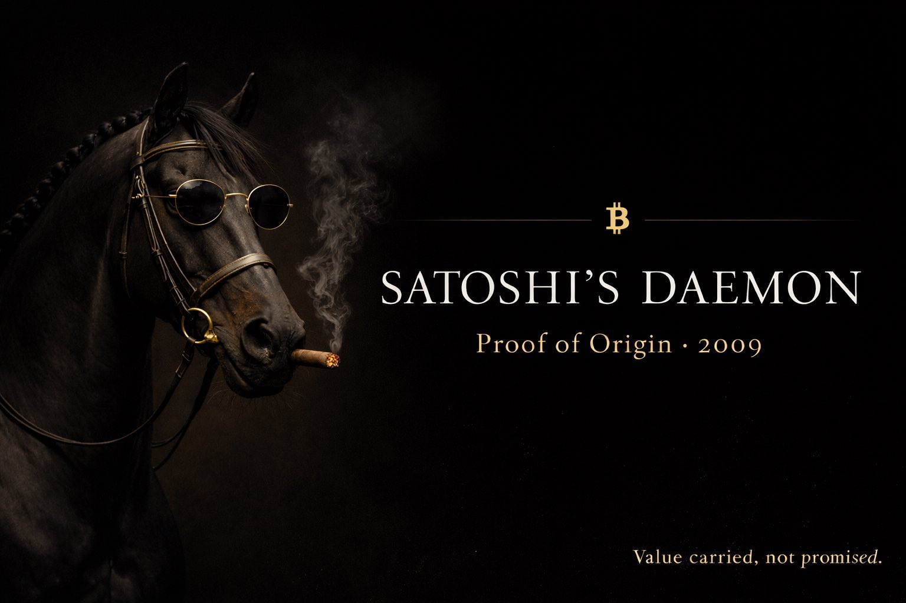

$DAEMON on Solana: The Legacy Reborn
We are thrilled to announce the launch of $DAEMON — a tribute token on Solana that revives the pioneering spirit of the original Satoshi's Daemon project from the early days of Bitcoin and decentralized finance.
$DAEMON is not just another meme coin. It is a cultural artifact rooted in crypto history: the first-ever racehorse funded via community investment on the GLBSE exchange in 2011. The original project introduced "Bitcoin Interest Rights" (BIRs)—a novel concept of shared upside without ownership—and captured the imagination of early Bitcoin adopters.
The core team behind $DAEMON has acquired the original domain, satoshisdaemon.com, securing the authentic brand and lore. This move ensures that $DAEMON is the only legitimate continuation of the Satoshi’s Daemon legacy—making it unvampable and uncopyable in spirit and identity.
Built on Solana for speed, low fees, and true decentralization, $DAEMON honors its roots while embracing modern DeFi culture. The community is already active and growing, centered around shared values of authenticity, nostalgia, and innovation. Join the movement on the official X Community .
The contract address is permanently set and verified:
HCBDsCcLAefSqeeY1RDgruX2ZWiLzVAGnYhDLx9hpump
$DAEMON is more than a token—it’s a resurrection of a crypto legend, galloping once again into the future.
